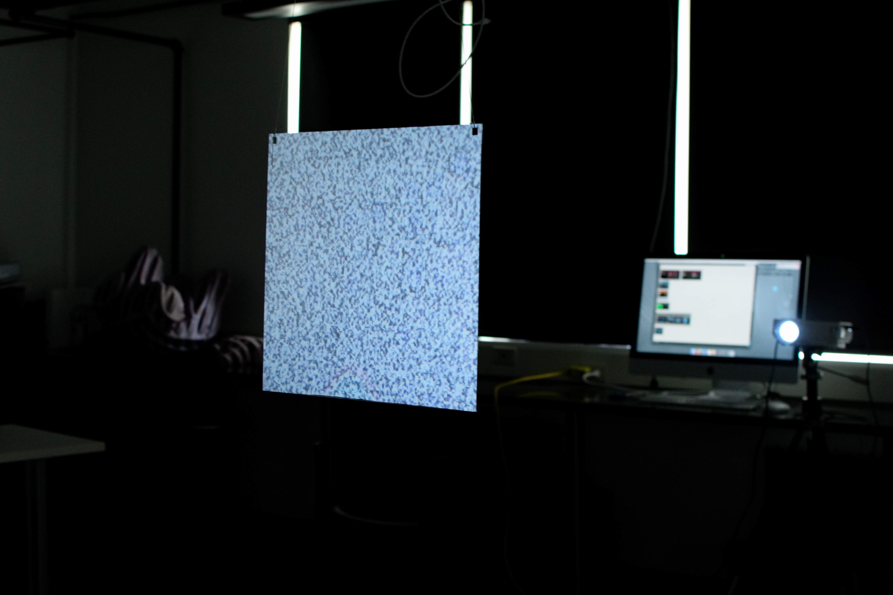
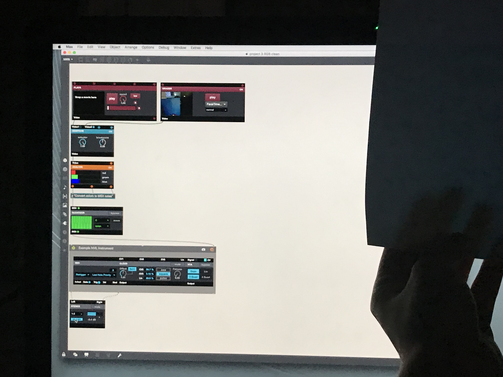

Click the play/pause buttons and view the pictures to see some installations
I have made. I make these projects to combine different processes - programming, animating, and
sound synthesis - and be able to physically display them. So far, my method of displaying has been
using projectors and laser-cut plexiglass.
This 2D projection mapped onto a laser cut 3D object pushes the boundary
of image to object. On the left, the structure is made out of plexi glass
and laser cut sticker paper. On the right, the projector shines light onto laser
cut scrim. Both objects have the same shapes cut into them. The
animated visual being projected was created in After Effects, and loaded
onto Processing, so that the speed of playback of the projection corresponded
to the volume of our soundscape.


In this visual and auditory project, I experimented with how different programming platforms can
interact with each other. I created a Max Patcher that analyzes the red, green, and blue values of
the computer's camera input. The viewer interacts with this piece by holding objects up to the camera.
I then wrote some code on Processing that analyzes the pitch being produced, and projects a
corresponding color onto a hanging sheet of plexiglass.
This prompts the viewer to speculate about less efficient and less enjoyable ways television can be consumed.